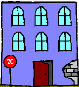

¿Quieres conocer las últimas novedades acerca de Benito y sus aventuras?
Si es así, ¡estás en el sitio adecuado!
Pero sigue leyendo, sigue...
¿Quieres conocer las últimas novedades acerca de Benito y sus aventuras?
Si es así, ¡estás en el sitio adecuado!
Pero sigue leyendo, sigue...
Benito García Gómez, más conocido como Benito G. G., es un detective privado peculiar, inteligente, pero un poco desastre, cuya zona de acción es el barrio de Chapuceros, enclavado en los bajos fondos de la ciudad de Sanpufo.
En su quehacer diario, Benito ha de habérselas con maleantes casposos, gamberretes recalcitrantes, ancianas desconfiadas y algún que otro misterio impenetrable.
Benito es famoso por haber llevado a cabo la resolución de casos difíciles, como encontrar al gato de la señora Paquita (que no tenía gato; ahora sí), y descubrir al ladrón de jamones de la fábrica Pernil, S.L. mediante un método insólito: el de practicar análisis de sangre a todos los empleados (Pepe, el encargado, tenía más colesterol que todos los habitantes del barrio juntos).
Para luchar contra el crimen, Benito cuenta con las mejores técnicas de investigación, y la última tecnología. La última que pudo comprar con sus menguados beneficios, claro está. Menos mal que había una buena oferta en el CarroFull, que si no, tú me dirás cómo se las iba a apañar con la máquina de escribir Oliveretta de su abuelo.
Entre los títulos y galardones varios que ostenta, el más codiciado sin duda es el Diploma en Grafología y Papiroflexia, obtenido en la UCLA (Universidad Conquense de Licenciados Asturianos), aunque no menos importante es su Licenciatura en Criminología y Macramé, cursada a distancia en la Universidad de Massaxuxes.
En resumidas cuentas, Benito es la envidia del gremio. Del gremio de la hostelería, claro, porque hace unos bocadillos de garbanzos con fideos, que quitan el sentío. No me extraña.
En el juego, tendrás que guiar a Benito en la resolución de los casos que se le presentarán mientras deambula por el barrio, en busca del olor inconfundible del crimen.
Unos vecinos te ayudarán y otros te confundirán, así que confía en tu instinto de detective, pues será tu mejor arma para desentrañar todos los misterios.
Puedes descargar gratuitamente la aplicación para dispositivos Android en la tienda de Google Play.
A continuación te presento algunos de los personajes con los que tendrás que vértelas.
Loli tiene un quiosco, famoso por sus chuches con sabor a paella.
Es muy servicial, aunque un tanto cotilla.
Esta última cualidad te puede ser muy útil si utilizas ese melón que tienes por cabeza, para algo más que ponerte el sombrero de detective.
¡Ah, y no compres demasiadas chuches!
Gustavo Porrot es el gerente del Hotel Hucho, aunque prefiere que le llamen Míster Porrot, dado que le gustan mucho las novelas de detectives de Agatha Christie, sobre todo las de Poirot. Como puedes ver, trata de imitar su aspecto.
Míster Porrot intentará ayudarte en tus pesquisas, pero la mayoría de las veces sólo conseguirá embarullarlo todo aún más.
Josechu es el dueño del Gimnasio Tirillas, el mejor del barrio, más que nada porque no hay otro.
Imparte clases de kárate, taekwondo, judo, defensa personal, y bolillos.
Es famoso por su capacidad de partir una viga de madera únicamente con el pestañeo de su ojo izquierdo, aunque con el derecho tan sólo ha llegado a romper una silla de plástico.
Aunque tiene fama de duro, en el fondo tan sólo es un chiquillo dulce y sensible.
Exuperio es el dueño del Cine Shin, famoso por sus reposiciones constantes, aburridas, cansinas, repetitivas y desesperantes de películas del Oeste. Del Oeste de Almería, que es donde se hacía la mayoría de esas películas.
Por si esto fuera poco, el carácter de Exuperio es un tanto, digamos, dificilillo. Un cascarrabias, vamos.
El mayor éxito de taquilla lo consiguió durante la reposición de Con balas y a lo loco, obteniendo una afluencia de público de 3 personas, a lo largo de 4 semanas. Eso es hacer historia en la industria cinematográfica, y lo demás son cuentos.
Durante el ejercicio de su carrera profesional, Benito ha resuelto infinidad de casos, unos más fáciles, otros más difíciles. Por citar algunos de ellos, sirva la siguiente selección.
Un caso no solicitado
Necesitaba un plan B. O uno C.
La verdad es que me daba igual la letra que le designara, pero necesitaba un plan. Y ya.
Así pues, puse a funcionar mi neurona frenéticamente, para concebir el milagro hecho plan. Y vaya si lo concebí, menudo soy yo para estas cosas. Y para las otras, ni les cuento. Lo denominé “Plan T”. La “T”, es por la primera letra de la palabra timbre. Vamos, que llamé a un timbre. El que se puso más a dedo, concretamente.
-¿Quién es? -dijo una voz melodiosamente desagradable.
-¡El butanero! -respondí yo, haciendo un alarde de imaginación.
-Aquí no tenemos gas -dijo la misma voz masculina, pero bastante más antipática, por cierto.
-Y ¿cómo cocinan sus pucheros, oiga? – me atreví a decir, aunque la verdad es que no estuve muy acertado. O sí, no sé. Juzguen ustedes.
-A ver, que sí que tenemos gas en el edificio. Lo que quiero decir, es que es el de las tuberías esas, ¿me entiende? Que no usamos bombonas… ¿Cómo se llama? ¡El gas ciudad, ése! -dijo el señor, en tono resabidillo.
-¡Pues muy mal, caballero, muy mal! -aquí ya estaba yo desatado- Lo que yo le traigo es gas de pueblo, que es mucho más sano y natural que el de ciudad. Y embotellado y todo, ¿cómo va usted a comparar?
Con este comentario acerté de pleno, pues el vecino cabezota empeñado en no dejarme entrar, por un quítame allá esos gases, al final accedió a abrirme la puerta.
El caso del sabueso diminuto
Tenía ante mí uno de esos casos en los que preciso de todas mis facultades, aunque, huelga decirlo, son tantas y de tan variable índole, que resulta extremadamente difícil hallar un misterio que las requiera en su totalidad.
A pesar de esto, mi profesionalidad me obliga a tratar el caso más nimio tal como si fuera el asesinato del siglo. Siempre pongo toda la carne en el asador, y tras devorarla convenientemente, acompañándola de un buen Rioja, echo la consabida siesta.
Mano de santo, pues una vez descansada la neurona, pongo toda mi atención en el misterio de turno, de tal forma, que es sólo cuestión de tiempo el hallar la solución, por oculta que ésta pueda presentarse.
El caso de los anónimos multicolor
En mi larga carrera contra el crimen, jamás había topado con un caso como aquél.
Mi clienta, doña Julia, esposa de un mangante… esto… un magnate de los de tomo y lomo, con múltiples negocios a cual más rentable, o como se dice ahora, diversificación de inversiones, estaba muy asustada.
Y no era para menos. En las últimas semanas, había recibido la friolera de cuatro escritos amenazantes, de autor desconocido.
O lo que es lo mismo, mogollón de mensajes anónimos con muy mala leche.
La guerra fría
Todavía pude vivir, durante el inicio de mi carrera profesional, los últimos estertores de la llamada guerra fría.
Lo recuerdo con amargura y cierto repelús, pues casi todos mis ingresos se iban en ropa de abrigo. Si he de serles sincero, prefiero las guerras templadas. Siempre he sido muy friolero, y mi madre se encarga de recordármelo cada dos por tres:
-Benito, ¿no vas muy fresco para el tiempo que hace?
-Mamá, que me tengo que ir a trabajar, y hoy he de disfrazarme de macarra musculitos para un caso…
-Tú ponte el abrigo y la bufanda, que hace mucho frio, o pillarás un resfriado. Hazle caso a tu madre, que sabe más que tú de estas cosas.
Y como no podía ser de otra manera, salgo de casa con el abrigo, la bufanda, el gorro, y los guantes puestos. Faltaría más.
Esta página web ha sido desarrollada en HTML5, CSS3, y JavaScript, como parte del proyecto profesional del Ciclo Formativo de Grado Superior de Desarrollo de Aplicaciones Multiplataforma, cursado en Florida Universitaria.
Para realizarla, se ha utilizado Notepad++.
Se ha diseñado para ser responsive, y su código fuente ha sido comprobado con los validadores de HTML5 y CSS3 de la W3C.
Dicho proyecto consta también de una aplicación para dispositivos Android, desarrollada en el lenguaje de programación Java y el sistema de gestión de bases de datos SQLite.
Se ha diseñado teniendo en cuenta a los usuarios zurdos (yo no lo soy, pero mi hijo sí).
Para realizarla, se ha utilizado Android Studio.
Powered by